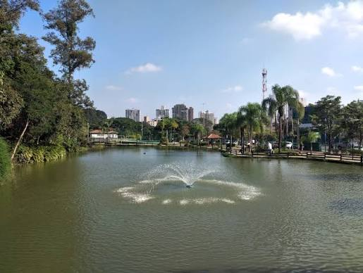
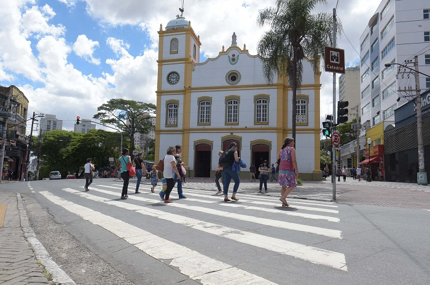
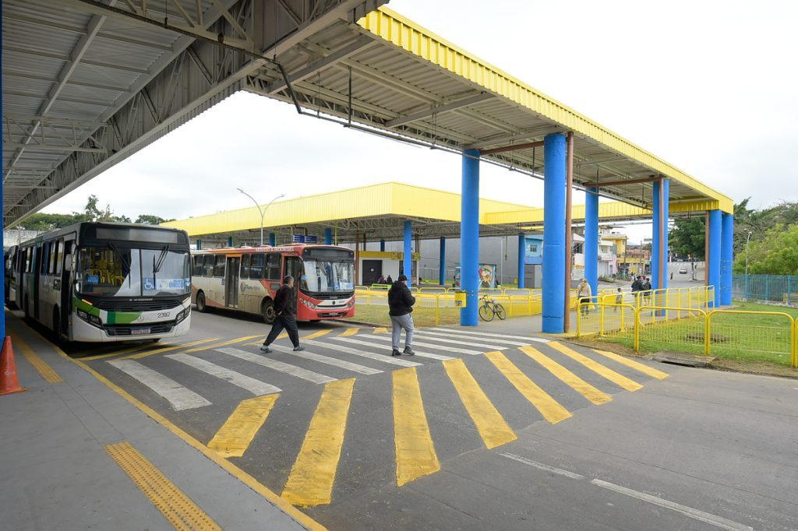
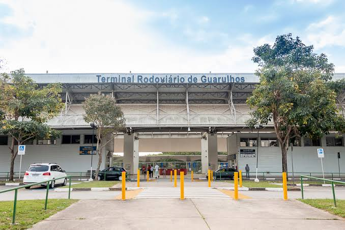
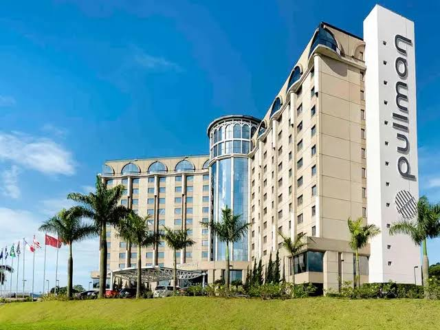
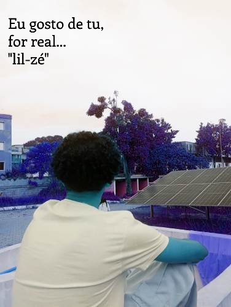

Guarulhos - centro
Um cidade calma e sem trânsito,feita para desfrutar.
Coleção de imagens responsiva desenvolvida com CSS Flexbox
Um cidade calma e sem trânsito,feita para desfrutar.

Campos verdes cobertos pela névoa matinal em meio à natureza.

A beleza do bairro todo em um só lugar.

No Shopping Bonsucesso você encontra um pouco de tudo.

Um Lago cheio de atrações e atividades.

Catedral Nossa Senhora da Conceição dos Guarulhos.

Terminal urbano de São João.

Belíssimo terminal rodoviário.

O Hotel Pullman São Paulo Guarulhos Airport está estrategicamente
localizado próximo ao Aeroporto Internacional de Guarulhos e oferece
a comodidade de traslado gratuito.

Jovem apreciando a linda vista que somenteb o IF de Guarulhos
proporciona.